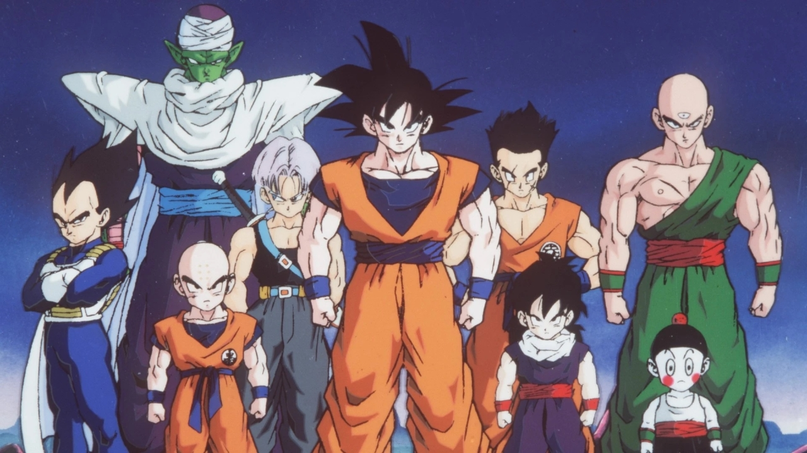

dragon ball
criador:
Dragon Ball é uma franquia de mídia japonesa criada por Akira Toriyama. Originalmente iniciada com uma série de mangá escrita e ilustrada por
Toriyama.
história
A série segue as aventuras do protagonista, Son Goku, desde sua infância até a idade adulta enquanto ele treina artes marciais e
explora o mundo em busca de sete esferas conhecidas como as Esferas do Dragão, que convocam um dragão que concede um desejo quando reunidas
Durante a sua vida, participa de muitas batalhas com adversários cada vez mais fortes, procurando sempre aumentar a sua força.
Goku:Originalmente batizado como Kakarotto, Goku é membro de uma raça fictícia de extraterrestres,
os Saiyajins. Logo após seu nascimento, Goku é enviado à Terra por seus pais Bardock e Gine para sobreviver à destruição do Planeta Vegeta
Vegeta:Vegeta chega ao planeta Terra como um ser arrogante e mesmo com o passar dos anos ele não perde essa característica,
principalmente quando enfrenta um inimigo. Assim que descobre a verdade sobre seu planeta natal,
passou a odiar Freeza devido ao abuso que sua raça sofreu em suas mãos e a destruição do Planeta Vegeta.
Kuririn:Nascido e crescido em um templo shaolin,
Kuririn partiu para treinar com o renomado Mestre Kame aos treze anos.
Chegando em sua ilha ele conheceu Goku e se autoproclamou seu rival.
Contudo, ao longo de seis meses de treinamento, Kuririn passou a aceitá-lo e os dois se tornaram melhores amigos.
Picolo:Piccolo surgiu dos desenhos que Akira fazia de humanos mas depois foi planejado para ser um demônio.
Quando o protagonista Goku se tornou o homem mais forte da Terra,
Toriyama decidiu criar personagens de outros planetas e a Piccolo foi estabelecido como um Namekuseijin.
Gohan:Gohan é filho do protagonista Goku com sua esposa Chi-Chi e o primeiro híbrido entre humano e Saiyajin mostrado na série,
seu nome é uma homenagem ao avô adotivo de seu pai,
Son Gohan que foi aluno de Mestre Kame, assim como Goku. Um tema recorrente na série é o grande poder oculto de Gohan, que aos poucos é liberado.
Mestre Kame:Dentro da história,
o Mestre Kame é o primeiro tutor do protagonista Son Goku e seus amigos Kuririn e Yamcha,
bem como o inventor da técnica mais famosa da série, o Kamehameha.
Apesar de ser um poderoso lutador, o personagem segue o arquétipo de velho tarado comumente presente nos mangás e animes do gênero shōnen.
Yamcha:Em Dragon Ball, Yamcha era um ladrão do deserto até conhecer Goku. Não fez nada de muito importante,
porém por algum tempo fingiu ser amigo de Bulma, Goku e Oolong para capturar as esferas do dragão deles. Porém,
no final, acabou virando amigo deles. Depois disso, não fez quase mais nada de importante.
Bulma:Bulma é retratada como uma moça mimada por grande parte da série: arrogante e aventureira,
mas com medo de ficar sozinha. Sua arrogância parece ter origem em sua inteligência,
pois uma das maiores características de Bulma é sua enorme determinação de conseguir o que quer. Ela também é conhecida por sua beleza.
Tenshinhan:Tenshinhan era originalmente um guerreiro de coração frio e cruel,
nunca ligando para a vida de ninguém com a exceção de seus companheiros e mentores.
Esta brutalidade pode ser vista quando ele quebra a perna de Yamcha no 22º Torneio de Artes Marciais.